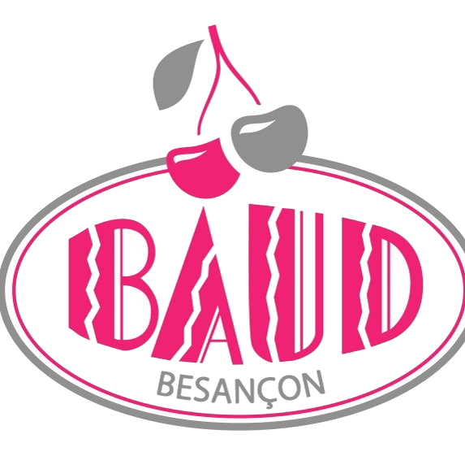

Version de test — page non référencée, réservée à l'équipe BAUD

Studio Devis
Transformez un devis FTBE en devis vendeur à la charte BAUD : plaquette paysage, photos, synthèse budgétaire, bon pour accord, conditions générales.
Télécharger la version 1 (54 Mo)
Windows 10 ou 11 · rien à installer · PowerPoint pour obtenir le PDF · tout reste sur votre poste
Comment ça marche
- Déposez le PDF FTBEL'outil lit le client, les convives, le lieu, les rubriques et les montants.
- Relisez à l'écranLibellés, accroche, déroulé, photos. Les montants restent ceux de FTBE, en lecture seule.
- GénérezUn PowerPoint modifiable et le PDF à envoyer, en 15 à 30 secondes.
Cette première version couvre les réceptions entreprise (cocktail dînatoire, buffet, repas). Le devis mariage n'est pas encore pris en charge.
Installer en quatre étapes
- Avant de décompresser : clic droit sur le fichier ZIP téléchargé, Propriétés, cochez Débloquer en bas, OK. Sans cela, Windows bloque le programme sans rien afficher.
- Décompressez le dossier où vous voulez, et gardez-le entier.
- Double-cliquez sur BAUD Studio Devis.exe. Une fenêtre noire s'ouvre, puis le navigateur. Laissez la fenêtre noire ouverte pendant que vous travaillez.
- Si Windows affiche « Windows a protégé votre ordinateur » : Informations complémentaires, puis Exécuter quand même. C'est normal, le programme n'est pas signé électroniquement.
Si l'antivirus met le fichier en quarantaine, ajoutez une exception sur le dossier : c'est un faux positif fréquent sur ce type de programme.
Le parcours de test
Prenez quelques devis FTBE de réceptions entreprise récents : des cocktails, mais aussi un repas ou un buffet pour voir ce qui se passe.
- Nouveau devis. Glissez le PDF FTBE dans la zone. Vérifiez que le client, la date, le lieu, le nombre de convives et les rubriques sont bien lus.
- Relisez. Le déroulé est reconstitué : est-il plausible ? Les intitulés sont corrigés par des règles (accents, majuscules, codes internes) : en reste-t-il de mauvais ? Saisissez le contact client, absent du PDF FTBE, et choisissez votre interlocuteur.
- Photos. Onglet Photothèque : 13 photos de départ. Ajoutez les vôtres, surtout des pièces cocktail, et cochez les sections où chacune peut apparaître.
- Générez et comparez avec ce que vous faites à la main aujourd'hui.
- Historique et analyse. Changez le statut d'un devis (en attente, validé, refusé, reporté), rouvrez-le, régénérez-le.
À vérifier avec attention
- Prix unitaires. Ils sont affichés au centime alors que FTBE calcule sur le prix exact (15 × 1,33 € ne fait pas exactement 19,91 €). Une mention l'explique sous chaque tableau. Cela vous convient-il ?
- Conditions générales. Ce sont celles imprimées par FTBE sur le PDF (réceptions entreprise). Sont-ce bien celles que vous voulez ?
- Page « La maison BAUD » et accroche de couverture. Textes proposés par défaut, tirés de vos CGV. Modifiables dans le fichier
config.json (Bloc-notes).
- Écarts d'arrondi. Si le détail des lignes diffère de quelques centimes du récapitulatif FTBE, un bandeau jaune le signale. Le total FTBE fait foi.
Ce qu'on attend comme retour
- Sur combien de devis l'outil s'est-il trompé, et sur quoi ?
- Combien de temps prend la relecture à l'écran, comparé à la mise en forme manuelle actuelle ?
- Qu'est-ce qui manque pour envoyer le résultat à un client sans y retoucher ?
- Les captures d'écran des cas qui coincent sont les plus utiles.
Envoyer mes retours
Où sont les fichiers : tout reste dans le dossier de l'application (data\devis pour les devis générés, assets\photos pour la photothèque). Pour repartir de zéro, fermez l'application et supprimez le dossier data.